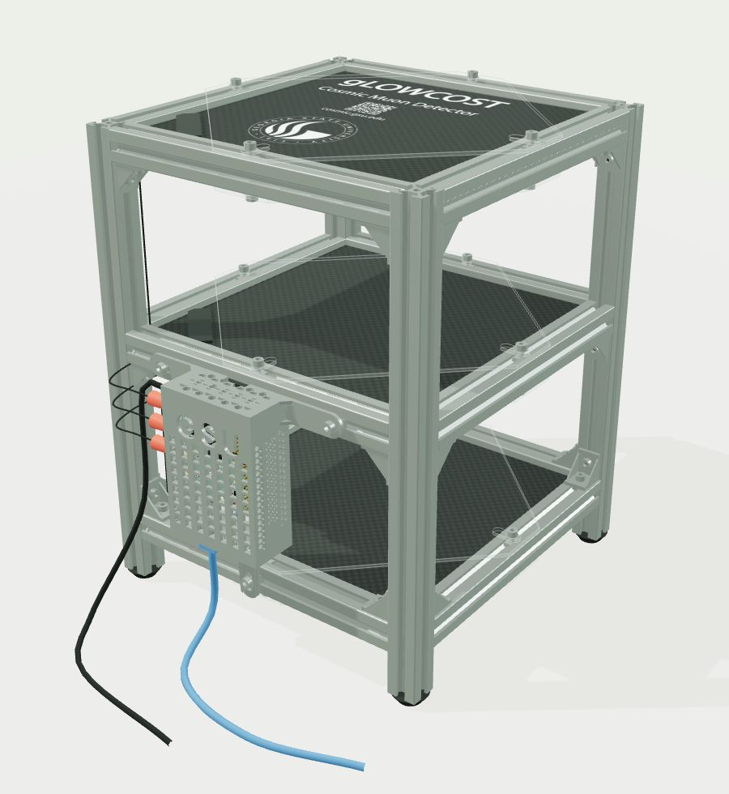

THE gLOWCOST COSMIC MUON DETECTOR
Digital TwinA window into the invisible.
High-energy particles from space strike Earth’s atmosphere, creating muons that pass through us. When a muon crosses our detector’s tiles, it can leave tiny flashes of light—signals that help us detect and count these invisible visitors.
The actual detector design. A simulated particle journey.

ACTUAL DETECTOR CAD · EXPLORE IN 3D ↗ONE PARTICLE. A CHAIN OF DISCOVERY.
From a passing muon
to a recorded count.
Follow six short steps, look inside a tile, then try your own experiment. Your place is kept in this browser tab.
What is real here, and what is illustrated?
The frame profiles, tile, holder and enclosure derive from supplied CAD. The readout PCB comes from KiCad; the Raspberry Pi 5 uses manufacturer CAD. Carrier boards, connectors and some fasteners are illustrative. Acrylic and liner thicknesses are assumed.
This guided track is a selected 4 GeV example through the reference detector, calculated with the existing muon transport model. It is not a measured event or a random sample of the sky. Flight plays at 2 ns per displayed second. Green fibre light and red indicators are teaching animations, not photon transport, measured timing or FPGA logic.
The full count simulation uses a sea-level source, approximate transport and ideal detection. Indoor shielding, optical efficiency, thresholds and electronic noise are not included in those counts.
KEEP EXPLORING
Go as deep as your curiosity.
Follow the path from a passing particle to a signal you can investigate. Each layer builds on the last. Construction and the network are optional side paths.
See what catches a muon ↗
Explore the complete detector, reveal its three tiles and see how one particle can produce several coincidences.
02 / LOOK INSIDE A TILEDiscover the tiny flash ↗
Follow energy deposition, molecular excitation, scintillation, fibre collection and the sensor. Test a longer path through the plastic.
03 / TRY IT YOURSELFTurn a question into data ↗
Change the tilt and direction. Collect a simulated week or several months, then compare rates across orientations.
04 / GO DEEPERTrace the electronic signal ↗
Probe the actual PCB and schematic. Compare expected analogue and logic signals in the virtual oscilloscope.
TAKE A SIDE PATH